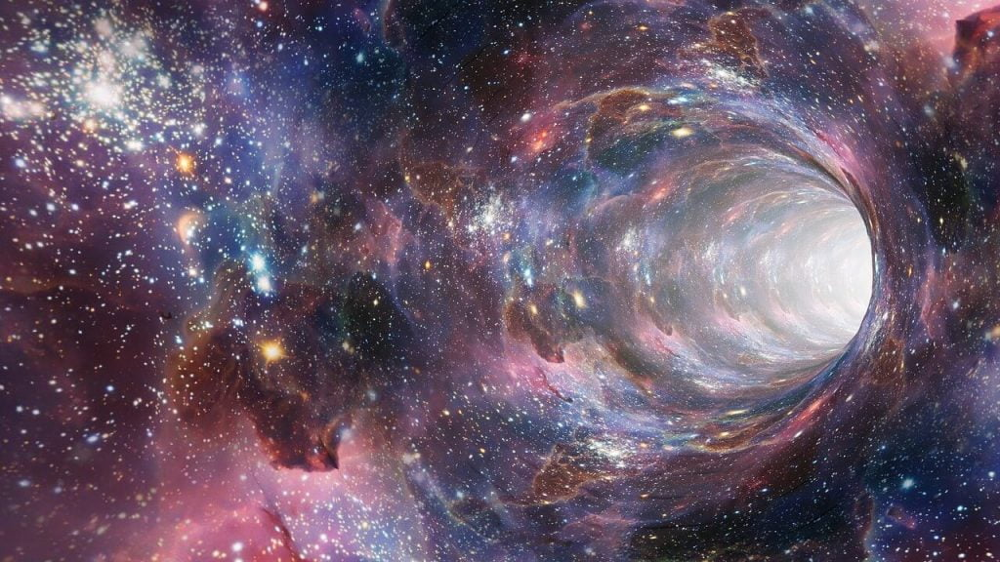

ဒီ မူလမှတ် နေရာမှာ ဆိုရင် ရူပဗေဒ ရဲ့ အခြေခံ ဥပဒေသတွေတောင်မှ ပျက်စီးကုန်မယ်လို့ သိပ္ပံ ပညာရှင်တွေက ယုံကြည်ကြပါတယ်။ ဒါပေမယ့် တကယ်ပဲ ဒီ တွင်းနက်ထဲ ဝင်သွားရင် မူလမှတ် မှာ အဆုံးသတ်သွားမှာလား။ အချို့ စိတ်ကူးယာဉ် သိပ္ပံ ရုပ်ရှင်တွေ ထဲကလိုမျိုး ဒီ တွင်းနက်ကြီးတွေရဲ့ အခြားတဖက်ဟာ အခြားသော ဂလက်ဆီတွေနဲ့ စကြာဝဠာတွေကို ခရီးဆန့်နိုင်မယ့် တံခါးပေါက် တွေ ဖြစ်နေမလား။ (ဒီ wormhole ဆိုတဲ့ အိုင်ဒီယာက တကယ်တော့ ရူပဗေဒ ပညာရှင် အတော်များများကပါ ယုံကြည်ကြပါတယ်။)
ဒီ အိုင်ဒီယာက ပြောရရင်တော့ အတော်လေး စိတ်ကူးယဉ် ဆန်တယ် ဆိုရမှာပါ။ ဒါပေမယ့် ရူပဗေဒ ပညာရှင် အချို့ရဲ့ လောလောလတ်လတ် တွက်ချက်မှု တွေအရ ဒီလို “စကြာဝဠာ တခါးပေါက်” အယူအဆဟာ ထင်သလောက် စိတ်ကူးယဉ် ဆန်မနေဘူးလို့ ပြောကြပါတယ်။ ဒီတွက်ချက်မှု တွေအရဆိုရင် တွင်းနက်တွေဟာ မူလမှတ် (Singularity) မှာ အဆုံးသတ်မသွားဘူး လို့ ဆိုပါတယ်။ ဒီအစား ဒီတွင်းနက်တွေဟာ အခြားသော စကြာဝဠာတွေဆီ သွားတဲ့ တံခါးပေါက်တွေ အဖြစ် ပြုမူကြတယ် လို့ ဆိုပါတယ်။
တပတ်လည်ကွမ်တမ်ဆွဲအား (Loop Quantum Gravity)
အပေါ်က ပြောခဲ့တဲ့ စကြာဝဠာ တခါးပေါက် အယူအဆဟာ ‘loop quantum gravity’ (LQG) လို့ခေါ်တဲ့ “တပတ်လည် ကွမ်တမ်ဆွဲအား” သီအိုရီ အပေါ်မှာ အခြေပြု ထားတာ ဖြစ်ပါတယ်။ ဒီ LQG ကို ကွမ်တမ် ရူပဗေဒနဲ့ ရီလေတီ ဗတီ သီအိုရီတို့ကို ပေါင်းစပ်နိုင်ဖို့ ကြိုးစားရင်း စတင် အဆိုပြုခဲ့တာ ဖြစ်ပါတယ်။ အိုင်းစတိုင်းရဲ့ ရီလေတီဗတီ သီအိုရီနဲ့ ကွမ်တမ် သီအိုရီ နှစ်ခုမှာ တစ်ခုနဲ့ တစ်ခု သဘောမညီတာတွေ၊ ဆက်စပ်လို့ မရတဲ့ အချက်တွေ အများကြီး ရှိနေပါတယ်။ ဒီ သဘော မတူတဲ့ အချက်တွေကို ဆက်စပ်လို့ ရအောင် LQG ကို အဆိုပြု ခဲ့ကြတာပါ။ဒီ ‘loop quantum gravity’ (LQG) “တပတ်လည် ကွမ်တမ်ဆွဲအား” သီအိုရီ အရဆို space-time ခေါ် အာကာသနဲ့ အချိန်ဟာ အလွန်ကို သေးငယ်တဲ့ space-time အပိုင်းအစ လေးတွေနဲ့ ဖွဲ့စည်းထားပါတယ်တဲ့။ တနည်းအားဖြင့် ပြောရရင် Space-time ကို တဆက်တစပ်ထဲ ရှိနေတဲ့ အရာတခု အနေနဲ့ သဘောမထားပဲ အလွန်သေးငယ်တဲ့ space-time အပိုင်းအစ လေးတွေနဲ့ စုစည်းထားတဲ့ အရာတခု အနေနဲ့ မြင်တာပါ။ သေးငယ်တဲ့ အက်တမ် လေးတွေ စုစည်းပြီး အရာဝတ္ထု ပစ္စည်းတွေ ဖြစ်လာ သလိုမျိုးပေါ့။ ကျောက်တောင်ကြီး တစ်ခုကို သေးငယ်တဲ့ ကျောက်မှုန်လေးတွေ စုစည်းပြီး တည်ဆောက်ထား သလိုမျိုး Space-Time အာကာသနဲ့အချိန် ကိုလဲ သေးငယ်တဲ့ အာကာသနဲ့ အချိန် အပိုင်းအဆ လေးတွေနဲ့ ပေါင်းစပ်ပြီး တည်ဆောက်ထားတာပါ။
(မှတ်ချက်။ ဒီ Loop Quantum Gravity သီအိုရီဟာ String Theory နဲ့ ပြိုင်ဖက် သီအိုရီ တစ်ခု ဖြစ်ပါတယ်။ လက်ရှိ ကွမ်တမ် ရူပဗေဒ ပညာရှင် လောကမှာ ဒီ သီအိုရီ နှစ်ခု အပြင်းအထန် ငြင်းခုန် တိုက်ခိုက်နေ ကြတာပါ။)
Loop Quantum Gravity သီအိုရီနှင့်အာကာသတွင်းနက်
အိုင်းစတိုင်းရဲ့ နှိုင်းယှဉ်ခြင်း နိယာမ (General Theory of Relativity) အရဆိုရင် တွင်းနက်ထဲကို လူတစ်ယောက် ကျသွားခဲ့ရင် အသက်ရှင်နိုင်ဖို့ အခွင့်အလမ်း လုံးဝ မရှိပါဘူး။ တွင်းနက်ရဲ့ ပြင်းထန်တဲ့ ဆွဲအားကြောင့် ခေါက်ဆွဲဖတ်လို ဆွဲဆန့်ခံရပြီး အသက်ဆုံးရှုံး ရမှာ ဖြစ်ပါတယ်။ ဒါတင်မကသေးပါဘူး တဖြည်းဖြည်း တွင်းနက်ရဲ့ ဗဟိုကို ရောက်သွားတဲ့ အခါ တွင်းနက်ရဲ့ ဗဟိုက မူလမှတ် (Singularity) နဲ့ ပေါင်းဆုံသွားမှာ ဖြစ်ပါတယ်။ သင့်ကိုယ်ခန္ဒာဟာ မြူမှုန်ထက်တောင် သေးငယ်တဲ့ အထိ ဖိသိပ်ခံရပြီး ပျောက်ကွယ်သွားပါလိမ့်မယ်။အိုင်းစတိုင်းရဲ့ သီအိုရီက ဒီအထိပဲ ပြောပါတယ်။ အဲ့လို မူလမှတ် နဲ့ ပေါင်းမိသွားပြီးတဲ့နောက် ဘာဆက်ဖြစ်လဲ ဆိုတာကို မပြောတော့ပါဘူး။ မူလမှတ် ရောက်ရင် ရူပဗေဒလဲ ပျောက်ဆုံးသွားပါတယ်။ ရူပဗေဒ ဖော်မြူလာတွေ၊ အီကွေးရှင်း တွေက အလုပ်မလုပ် ကြတော့ပါဘူး။
ဒီ ပြဿနာက တွင်းနက်ကြီးတွေ မှာတင် မဟုတ်ပါဘူး။ Big Bang ခေါ်တဲ့ မူလအစ ပေါက်ကွဲမှုကြီး ဖြစ်စဉ်မှာလဲ ဒီပြဿနာကို ကြုံတွေ့ရပါတယ်။ ၂၀၀၆ ခုနှစ်မှာတော့ ပန်စင်ဗေးနီးယား တက္ကသိုလ် (Pennsylvania State University) က အက်ဘီ အက်ရှ်တီကာ (Abhay Ashtekar) နဲ့ အဖွဲ့သားတွေဟာ Loop Quantum Gravity သီအိုရီ ကို စကြာဝဠာရဲ့ မူလအစ ဖြစ်စဉ်မှာ ပေါင်းစပ်ကြည့်ဖို့ ကြိုးစားခဲ့ ကြပါတယ်။ သင်္ချာနည်းကို အသုံးချပြီး စကြာဝဠာရဲ့ အစကို ပြန်ပြောင်း ဖန်တီး (Simulate) ကြည့်ကြတဲ့ အခါမှာတော့ Big Bang ရောက်တဲ့ အချိန်မှာ မထင်မှတ်ထားတာကို သွားတွေ့ခဲ့ ကြပါတယ်။ အဲ့တာကတော့ Big Bang ရောက်တဲ့ အခါ မူလမှတ် (Singularity) နဲ့ အဆုံးသတ် မသွားတာပဲ ဖြစ်ပါတယ်။ ဒီ့အစား အခြား စကြာဝဠာ တစ်ခုထဲ ရောက်သွားခြင်းပဲ ဖြစ်ပါတယ်။

သတင်းဝိရောဓိ (Information Paradox) ပြဿနာ
လူဝီစီယားနား ပြည်နယ် တက္ကသိုလ် (Lousiana State University) က သုတေသီ ဂျော့ပူလင် (Jorge Pullin) နဲ့ ဥရုဂွေးနိုင်ငံ (Uruguay) မွန်တီဗီဒီအို တက္ကသိုလ် (University of the Republic in Montevideo) က သုတေသီ ရိုဒိုလ်ဖို ဂမ်ဘီနီ (Rodolfo Gambini) တို့ နှစ်ဦးဟာ အထက်က နည်းလမ်းကိုပဲ အသုံးချပြီး တွင်းနက်ကြီးတွေထဲ ကျသွားရင် ဘာဖြစ်မလဲ ဆိုတာကို Loop Quantum Gravity Theory ကို အသုံးချပြီး အဖြေရှာကြည့် ကြပါတယ်။ ဒီတွက်ချက်မှုအတွက် သူတို့ဟာ တွင်းနက်ကြီးတွေ အထဲက အရိုးရှင်းဆုံး တွင်းနက် အမျိုးအစား ကို ရွေးချယ်ခဲ့ပါတယ်။ သူတို့ရွေးတဲ့ တွင်းနက်က ဘောလုံးလို လုံးဝန်းညီညာနေပြီး လည်ပတ်နေခြင်း မရှိတဲ့ တွင်းနက် အမျိုးအစား ဖြစ်ပါတယ်။ဒီလို စမ်းသပ် Simulate လုပ်ကြည့်ရာမှာ တွင်နက်ရဲ့ ဗဟိုနား ရောက်လေလေ ဆွဲငင်အား ကြီးမားလာ လေလေ ဆိုတာကို တွေ့ရှိရပါတယ်။ ဒါပေမယ့် ဗဟိုကို ရောက်တဲ့ အခါမှာတော့ အိုင်းစတိုင်းရဲ့ ရီလေတီဗတီ က ပြောခဲ့သလို မူလမှတ် (Singularity) ဖြစ်မသွားပါဘူး။ ဒီ့အစား ဆွဲငင်အားဟာ တဖြည်းဖြည်း ပြန်လျော့သွားတာကို တွေ့ရှိရပါတယ်။ ဘာနဲ့တူလဲ ဆိုတော့ တွင်းနက်ရဲ့ အခြားတဖက်ကနေ အပြင်ကို ပြန်ထွက် သွားသလိုမျိုးပါပဲ။ ပြန်ထွက်သွားတာက စကြာဝဠာကြီးထဲက အခြား အရပ်ဒေသ တခုလဲ ဖြစ်ချင် ဖြစ်မယ်၊ ဒါမှမဟုတ် အချို့သော ရူပဗေဒ ပညာရှင်တွေ ယုံကြည်နေကြသလိုမျိုး အခြား စကြာဝဠာ တစ်ခုခုလဲ ဖြစ်ချင် ဖြစ်ပါလိမ့်မယ်။
ဒီ စမ်းသပ်တွက်ချက်မှုဟာ အရိုးရှင်းဆုံး ဆိုတဲ့ တွင်းနက်အမျိုးအစားပေါ်မှာ ပြုလုပ်ခဲ့တာ ဖြစ်ပါတယ်။ ဒါပေမယ့် ပြုလုပ်ခဲ့တဲ့ သုတေသီ တွေကတော့ ဒီတွေ့ရှိချက်ဟာ အခြားသော တွင်းနက် အမျိုးအစားတွေမှာလဲ အတူတူပဲ ဖြစ်လိမ့်မယ်လို့ ယုံကြည်ကြပါတယ်။
ဒီ သုတေသနမှာ အဓိက အကျဆုံး အရေးပါတဲ့ အချက်ကတော့ တွင်းနက်ထဲက Singularity ခေါ် မူလမှတ်ကို ဖယ်ထုတ်လိုက် နိုင်ခြင်းပဲ ဖြစ်ပါတယ်။ အခြားသော ရူပဗေဒ သီအိုရီတွေအရလဲ တွင်းနက်ရဲ့ ဟိုဖက်မှာ စကြာဝဠာရဲ့ အခြား ရပ်ဝန်းတခု (သို့) အခြား စကြာဝဠာ တခုနဲ့ ချိတ်ဆက်နေ လိမ့်မယ်လို့ ဟောကိန်းထုတ်ထား ကြပါတယ်။ Wormhole လို့ ခေါ်တဲ့ ဒီ လှိုင်ခေါင်းကိုလဲ ယုံကြည်တဲ့ ရူပဗေဒ ပညာရှင်တွေ အတော် များပါတယ်။ ပြဿနာက ဘယ် သီအိုရီ မှ တွင်းနက်ရဲ့ ခလယ်မှာ ရှိနေတဲ့ မူလမှတ် ပြဿနာကို မဖြေရှင်းနိုင် ခြင်းပဲ ဖြစ်ပါတယ်။ တွင်းနက်ရဲ့ ဟိုဖက်ကို ရောက်ဖို့ဆို ဒီ မူလမှတ်ကို ဖြတ်ရမှာ ဖြစ်ပြီး ဒီ မူလမှတ် ရှိနေ သရွေ့ တွင်းနက်ရဲ့ ဟိုဖက်ကို ရောက်နိုင်မှာ မဟုတ်လို့ပါ။ အခု ဒီ သုတေသန အရ အကယ်လို့ Loop Quantum Theory သာ မှန်ခဲ့မယ် ဆိုရင် တွင်းနက်ထဲမှာ မူလမှတ် မရှိနိုင်တော့ ပါဘူး။
လက်ရှိမှာတော့ ဒီတွေ့ရှိချက်ကို ဘယ်နေရာမှာမှ အသုံးချနိုင်စွမ်း မရှိသေးပါဘူး။ ဒါပေမယ့် တွင်းနက်တွေနဲ့ ပါတ်သက်တဲ့ အခြားပြဿနာ တစ်ခုကိုတော့ ဖြေရှင်းနိုင်သွားပါတယ်။ အဲ့ဒါကတော့ “အချက်အလက် ပျောက်ဆုံးမှု ပြဿနာ (Information paradox)” ကို ဖြေရှင်းပေးလိုက်တာပဲ ဖြစ်ပါတယ်။
တွင်းနက်တွေဟာ ဒြပ်ထုတွေကို စုပ်ယူဝါးမျိုတာနဲ့ တချိန်တည်းမှာ ဒီ ဒြပ်ထုတွေနဲ့ ပါတ်သက်တဲ့ ရူပဗေဒ ဆိုင်ရာ အချက်အလက် တွေကိုလဲ ဝါးမြိုလိုက်ပါတယ်။ ဒါပေမယ့် တချိန်ထဲမှာ တွင်းနက်တွေဟာ တဖြည်းဖြည်း အငွေ့ပျံ သွားမယ်လို့ ယူဆကြပါတယ်။ တွင်းနက်ထဲက ဘာမှ ပြန်မထွက်နိုင်တဲ့အတွက် တွင်းနက်ထဲ ဝင်သွားတဲ့ သတင်း အချက်အလက်တွေဟာ တွင်းနက် အငွေ့ပျံ သွားတာနဲ့ အတူ ထာဝရ ပျောက်ဆုံးသွားမှာ ဖြစ်ပါတယ်။ ဒီအချက်က ကွမ်တမ် ရူပဗေဒနဲ့ လုံးဝ ဆန့်ကျင်နေပါတယ်။
ဒါပေမယ့် အခု သုတေသနအရ တွင်းနက်တွေမှာ မူလမှတ် မရှိခဲ့ဘူး ဆိုရင် တွင်းနက်တွေထဲ ဝင်သွားတဲ့ သတင်းအချက်အလက်တွေဟာ ပျောက်ဆုံးသွားစရာ မရှိတော့ပါဘူး။ ဒီ သတင်းအချက်အလက်တွေဟာ wormhole အာကာသ လှိုင်ခေါင်း ကနေတဆင့် ဖြတ်သန်းပြီး အခြား စကြာဝဠာ တခုမှာ ဖြစ်ဖြစ် ပြန်ထွက်လာမှာ ဖြစ်ပါတယ်။
တနည်းအားဖြင့် ပြောရရင် “တွင်းနက်ထဲမှာ သတင်းအချက်အလက်တွေ ပျောက်ဆုံးသွားတာ မဟုတ်ပါဘူး။ အခြားတဖက်ကနေ လွတ်ထွက်သွားတာပါ” လို့ ဒီသုတေသနကို ဦးဆောင်ခဲ့သူ ပူလင် က ပြောပါတယ်။
Reference:
Quantum gravity takes singularity out of black holes | New Scientist
Black Holes Are ‘Portals to Other Universes,’ According to New Quantum Results | Tree Hugger